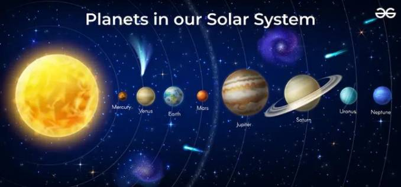

ระบบสุริยะ
ระบบสุริยะ เป็นระบบดาวที่มีดวงอาทิตย์เป็นศูนย์กลาง และมีวัตถุท้องฟ้าหลายชนิดโคจรรอบดวงอาทิตย์ด้วยแรงโน้มถ่วง ดวงอาทิตย์มีมวลมากที่สุดในระบบสุริยะ และเป็นแหล่งพลังงานสำคัญที่ให้แสงและความร้อนแก่โลก
ดาวเคราะห์ทั้ง 8 ดวง
ดาวพุธ – ดาวเคราะห์ที่อยู่ใกล้ดวงอาทิตย์ที่สุด และมีขนาดเล็กที่สุดในบรรดาดาวเคราะห์ทั้ง 8 ดวง
ดาวศุกร์ – มีขนาดใกล้เคียงกับโลก แต่มีอุณหภูมิพื้นผิวสูงมาก
โลก – เป็นดาวเคราะห์ที่มีสิ่งมีชีวิตอาศัยอยู่ และมีน้ำในสถานะของเหลวจำนวนมาก
ดาวอังคาร – มีพื้นผิวเป็นสีแดงจากแร่ธาตุที่มีเหล็ก และเป็นเป้าหมายสำคัญของการสำรวจอวกาศ
ดาวพฤหัสบดี – เป็นดาวเคราะห์ที่มีขนาดใหญ่ที่สุดในระบบสุริยะ
ดาวเสาร์ – มีวงแหวนที่โดดเด่น ประกอบด้วยน้ำแข็ง หิน และฝุ่นจำนวนมาก
ดาวยูเรนัส – เป็นดาวเคราะห์ที่มีแกนหมุนเอียงมาก ทำให้มีลักษณะการหมุนแตกต่างจากดาวเคราะห์ส่วนใหญ่
ดาวเนปจูน – เป็นดาวเคราะห์ที่อยู่ไกลดวงอาทิตย์ที่สุดในบรรดาดาวเคราะห์ทั้ง 8 ดวง มีลมความเร็วสูงมาก
นอกจากดาวเคราะห์แล้ว ระบบสุริยะยังประกอบด้วยดวงจันทร์ ดาวเคราะห์แคระ ดาวเคราะห์น้อย ดาวหาง และวัตถุท้องฟ้าอื่น ๆ การศึกษาระบบสุริยะช่วยให้เราเข้าใจการกำเนิดของดาวเคราะห์และความสัมพันธ์ระหว่างวัตถุต่าง ๆ ในอวกาศ